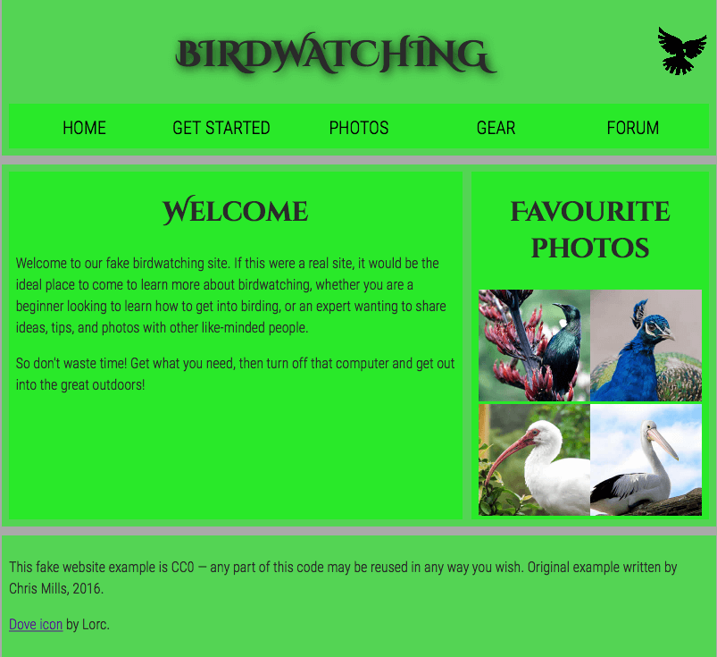

Structuring a page of content ready for laying it out using CSS is a very important skill to master, so in this assessment you'll be tested on your ability to think about how a page might end up looking, and choose appropriate structural semantics to build a layout on top of.
| Prerequisites: | Before attempting this assessment you should have already worked through the rest of the course, with a particular emphasis on Document and website structure. |
|---|---|
| Objective: | To test knowledge of web page structures, and how to represent a prospective layout design in markup. |
To get this assessment started, you should go and grab the zip file containing all the starting assets.
The zip file contains:
Create the example on your local computer, or alternatively use an online tool such as CodePen, jsFiddle, or Glitch to work on the tasks.
Note: If you get stuck, then ask us for help — see the {{anch("Assessment or further help")}} section at the bottom of this page.
For this project, your task is to take the content for the homepage of a bird watching website and add structural elements to it so it can have a page layout applied to it. It needs to have:
You need to add a suitable wrapper for:
You should also:
The following screenshot shows an example of what the homepage might look like after being marked up.

If you would like your work assessed, or are stuck and want to ask for help:
{{PreviousMenu("Learn/HTML/Introduction_to_HTML/Marking_up_a_letter", "Learn/HTML/Introduction_to_HTML")}}